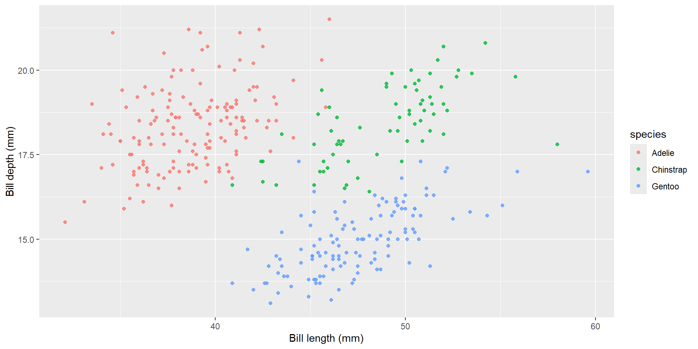
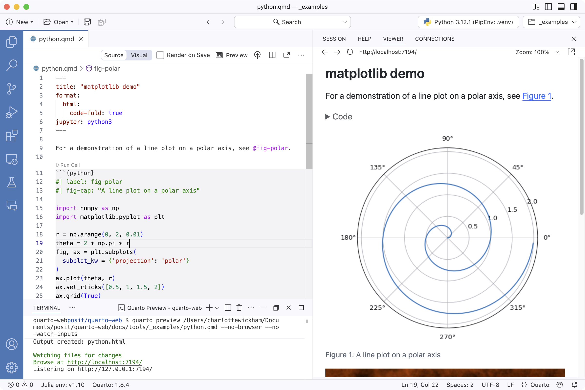

| species | bill |
|---|---|
| Adelie | 38.8 |
| Gentoo | 47.5 |
| Chinstrap | 48.8 |
Introduction to Quarto
RaukR 2026 · Day 1 — the single document
Christophe Dervieux
Learning Outcomes
After this session you will be able to:
- author a Quarto document natively (
.qmd), with figures, tables, cross-references, and math. - lay out a document with the article grid and margin content.
- make it accessible with alt text, color-blind-safe colors, and a built-in contrast check.
- cite your sources from a
.bibfile in the style a journal asks for. - turn it into a branded Typst PDF — no LaTeX.
By the end, you will have a polished PDF report.
How today works
Two rounds, each the same shape (watch → follow along → your turn):
- some slides I talk through. A Follow along callout opens each hands-on stretch and an Eyes up callout closes it.
- each round ends with a hands-on Challenge in the lab (solutions are folded in for self-checking).
- a break sits between the two rounds.
Slides and lab live at https://cderv.github.io/raukr-2026-quarto/. Open them on your own screen and move at your own pace.
Part 1: Basics
Author a document and render it to HTML.
What you can now build
You know the literate-programming idea. In 2026, one .qmd is your source for:
- a report (HTML, PDF, Word) with figures, tables, cross-references, and citations.
- a presentation (these slides are a
.qmd). - a website or book (Day 2) with many pages and one configuration file.
- a branded PDF via Typst (a modern PDF engine bundled in Quarto, no LaTeX): an article or a long report.
One tool, many outputs, multiple languages: all from one plain-text .qmd you write directly.
How it all works
quarto render report.qmd runs your code, then hands Markdown to Pandoc:

Anatomy of a .qmd
Three parts: a YAML header, Markdown prose, and executable code cells.
Cell options use the #| “hash-pipe”: one YAML option per line.
Markdown and content: what changes
Follow along
In day1-intro/, create my-report.qmd with format: html. It is the file the lab starts from. Put this cell at the top: everything we write next assumes it. Fallen behind at any point? Open starter.qmd in the same folder and keep going from there.
You already know Markdown. Quarto adds the research-writing pieces: figures and tables with captions, cross-references (@fig-bill, @tbl-summary, @eq-ratio), math, inline code that reports numbers from the data, and callouts.
Figures & cross-references
A labeled code cell becomes a numbered, referenceable figure:
```{r}
#| label: fig-bill
#| fig-cap: "Bill length versus depth, by species."
#| fig-alt: >-
#| Scatter plot of bill depth against bill length
#| for three penguin species, forming clusters.
#| output-location: column
ggplot(penguins, aes(bill_len, bill_dep,
color = species)) +
geom_point(alpha = 0.8) +
labs(x = "Bill length (mm)",
y = "Bill depth (mm)")
```
Refer to it in prose with @fig-bill → renders as “Figure 1”, a live link. Labels must start with fig- / tbl- / eq- to be cross-referenceable.
#| fig-alt is the figure’s alt text (the description screen readers announce). Add it to every figure. (#| output-location: column is slide-only: a revealjs placement, not article layout.)
Tables
gt (or knitr::kable) turns a data frame into a table. A #| label: tbl- makes it referenceable.
Then refer to it in prose with @tbl-summary (same mechanic as figures).
Learn more: Cross-references
Math
Display math with a label is cross-referenceable too:
renders as Equation 1 below:
\[ \text{ratio} = \frac{\text{bill\_len}}{\text{bill\_dep}} \tag{1}\]
Callouts
Callouts are first-class Markdown (no package):
Tip
Base-R penguins (R ≥ 4.5) needs no install.
Learn more: Callouts
Inline code
Inline code inserts a computed value into prose. Put it in a sentence:
It renders with the live count: “We measured 342 penguins.”
The number updates when the data does. Reproducible by construction.
Learn more: Inline code
Layouts: body, margin, and beyond
Eyes up — not a live Follow along
The live build is done. The next seven slides are concept, no need to type along. Your document is ready for the Challenge.
The article-layout model puts content in the body, the margin, or a zone wider than the body (in the paged formats: HTML, LaTeX, Typst):
page-layout: article/full: the overall grid.- margin content: figures, tables, captions,
.aside, and footnotes. - outset / inset: a figure or table that extends beyond the body (outset) or widens toward the page while keeping a margin from the edge (inset).
- multi-column
::: {.columns}and panels: tabsets andlayout-ncol.
Put output in the margin
A cell’s #| column: margin drops its output (figure or table, caption and all) into the margin:
In the lab you’ll use margin layout. The rest are in the Quarto docs below.
Learn more: Article Layout · Margin content
Make it accessible
Accessibility is a few habits layered on what you already write:
- Alt text: you already add
#| fig-alt:to every figure. It is what a screen reader announces. - Color-blind-safe colors: the default palette is not safe. Pick one that is: Okabe-Ito is the common choice in science (
scale_color_okabe_ito()), viridis suits continuous scales. Encode by shape or label too, not color alone. - Check contrast: WCAG wants 4.5:1 on text. Quarto’s built-in
axeruns axe-core on the rendered page:
Learn more: HTML Accessibility
One source → many formats
One key in the header picks the output. The content stays put:
- Shared vs. per-format: top-level keys (
toc,number-sections, …) apply to every format. Theformat:map overrides them per output. - Conditional content: show or hide a block per format:
- The layout idioms adapt per format: write once, target many.
Learn more: Multiple formats · Conditional content
Execution: set once, override per cell
R Markdown’s knitr::opts_chunk$set() moves into the header. Set defaults once, override per cell:
The header sets the defaults. A cell’s #| wins.
freeze commits computed results to _freeze/ so a project re-render (or CI without R) skips unchanged documents. We’ll see it in Day 2.
Learn more: Execution options · Cell options
Running & editing
Drive Quarto from the CLI, in whatever editor you like:
- RStudio, Positron, and VS Code all work. The visual editor (WYSIWYM — what you see is what you mean) is built into the RStudio IDE, and comes to Positron and VS Code through the Quarto extension.
- The same
quarto renderalso takes-P name:value: override a document parameter to get one report per sample or species from a single source. (Optional bonus in today’s lab.)
Quarto in Positron
The same quarto preview, from inside the editor: source on the left, live preview on the right. Edit, hit Preview, and it live-reloads.

Your turn
Your turn — until the break at 15:00
Head to the Lab and start at the Authoring Challenge: author a penguins document with a figure, a cross-referenced table, and margin layout, then render it to HTML. We break at 15:00 and resume at 15:30.
You can now author a figure, a cross-referenced table, and margin layout. After the break we cite it and ship a branded PDF.
Part 2: Citations → Typst
From report to article: cite it, then typeset it.
From report to article
You have a clean HTML document. The lab includes a Part-2 starter if you need one. To make it a publication-ready article, two more things:
- citations: a
.bibfile and a citation style. - a typeset PDF — via Typst, bundled in Quarto.
This is exactly the path from your analysis to a submission, and to your team-project write-up.
Citations
Follow along
Back in your editor: add citations to your Part-1 document (or to day1-intro/starter.qmd).
Point the header at a .bib, then cite with @key:
renders as: … (Gorman et al., 2014).
The reference list renders at the end automatically, or wherever you drop this div:
CSL = Citation Style Language. Swap the csl: file to restyle every citation.
Learn more: Citations
A real title block
A few header lines turn the document into a publication-ready article (name, affiliation, ORCID, abstract):
Renders in HTML, PDF, and Typst. Write it once.
Learn more: Title blocks
Typst — modern PDF, no LaTeX
Typst is a modern typesetting system that is bundled with Quarto: nothing to install, no LaTeX toolchain.
That is the whole switch. Then re-render:
The header already says which format, so nothing else is needed. To get the PDF without touching the header, ask for it on the command line instead: quarto render report.qmd --to typst.
Pre-flight
Typst is bundled from Quarto 1.4+. We require ≥ 1.9 for margin and article layout. Check once with quarto --version.
Branding the PDF — _brand.yml
One _brand.yml carries your palette + fonts to the Typst PDF you just built, and to the plots and tables inside it:
- Same file themes HTML and Typst.
- The R side (
theme_brand_ggplot2()/theme_brand_gt()from the brand.yml package) themes your plots and tables from the same palette. - Quarto fetches Google fonts for Typst automatically.
Your turn
Your turn
Back to the Lab, at the Citations Challenge: add citations to the Part-2 starter (or your own Part-1 file), then render it as a branded Typst PDF. You’ll finish with a publication-ready article, a citable, branded PDF you could submit.
What you can do now
You can now:
- author a
.qmdnatively with figures, tables, cross-references, math, and callouts. - lay it out with the article grid and margin content.
- make it accessible with alt text, color-blind-safe colors, and a built-in
axecheck. - cite it with a
.biband CSL, and give it a real title block. - render it as a branded Typst PDF — no LaTeX.
Next (Day 2): grow one document into a whole project, a website your team can publish.
Thank you!
Questions?
Slides + lab: https://cderv.github.io/raukr-2026-quarto/
Learn more: quarto.org/docs/guide · Typst format · _brand.yml
Christophe Dervieux · GitHub @cderv · cderv@posit.co